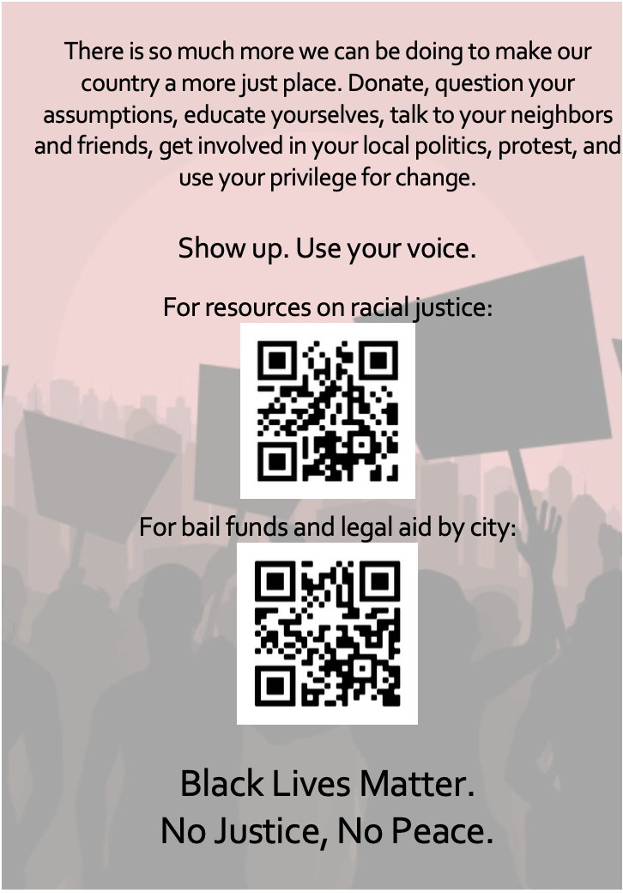
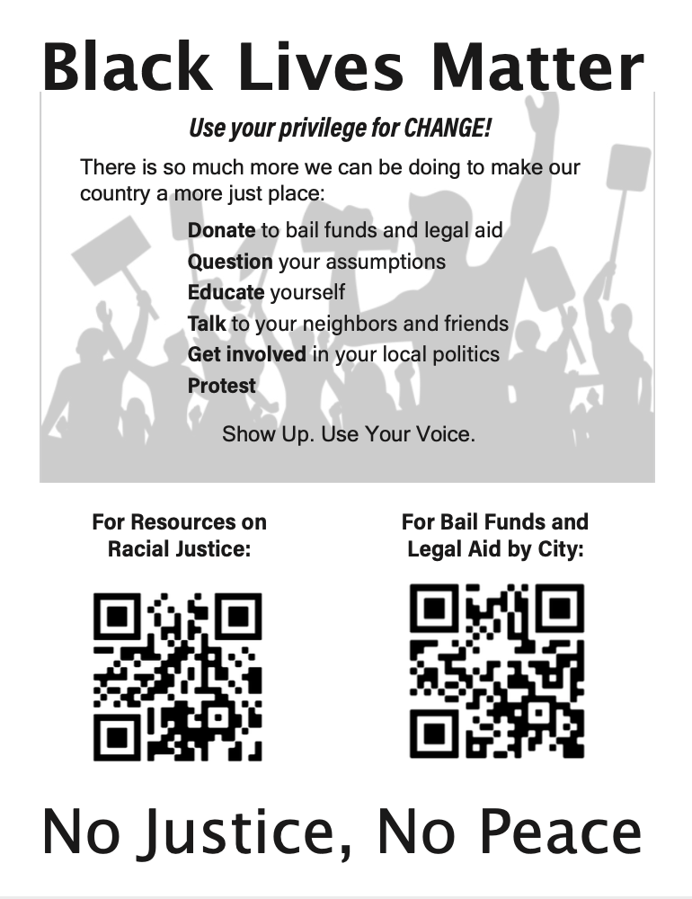
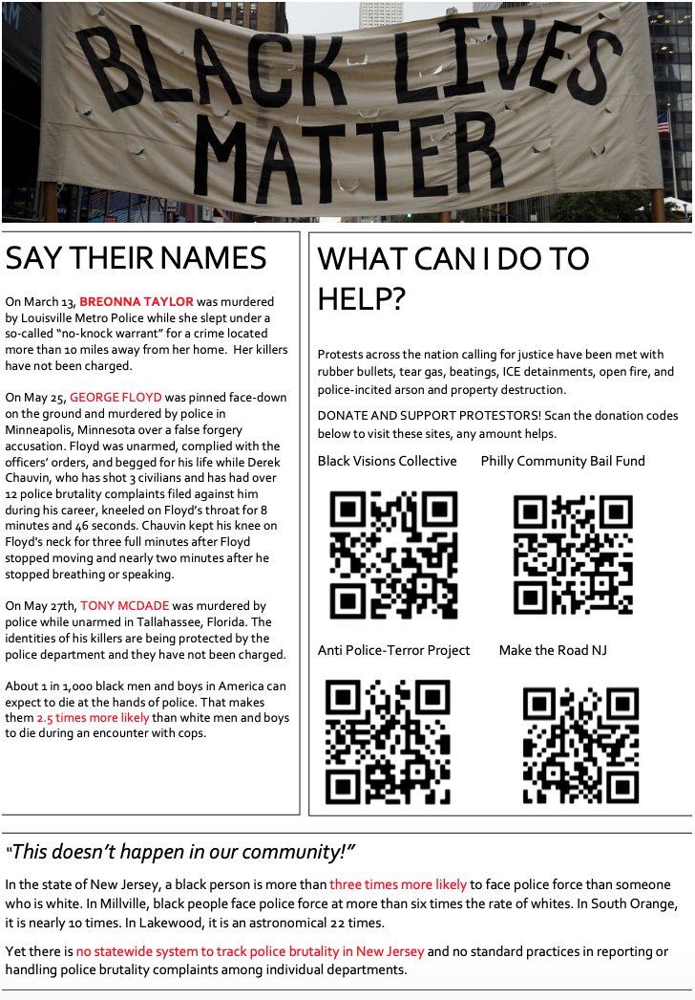
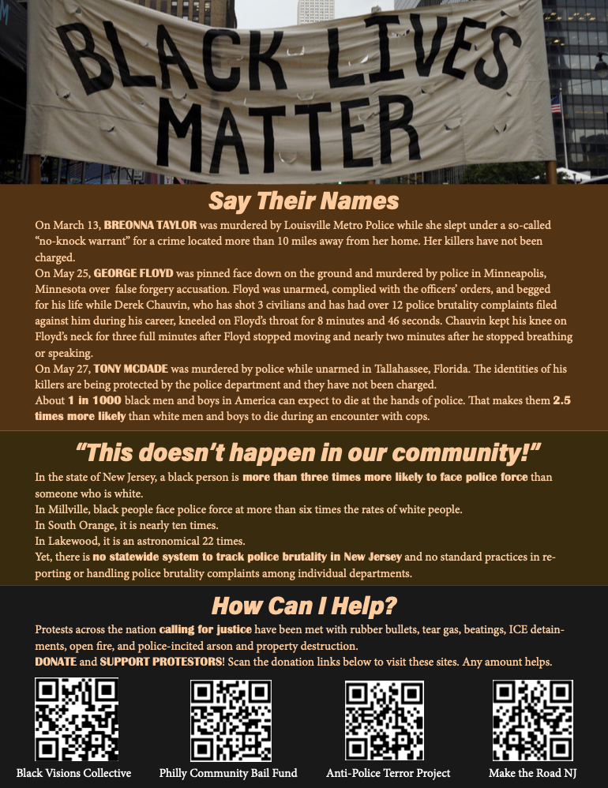

UX/Design Projects
Black Lives Matter Flyer
I redesigned a flyer that my friend made to pass out to older folk in her New Jersey community to inform them about the Black Lives Matter movement, since they don't use social media.
I used InDesign to reformat the flyer, using hierarchy and different type faces to emphasize key points. I also utilized black and brown color choices to emphasize the Black Lives Matter movement.
Original Page 1
Updated Page 1
Original Page 2
Updated Page 2
Here is a link to the original flyer which was sent to me. Here is the link to the final flyer which I redesigned.
Decision Making App
I designed a decision making app for my Interaction Design: Mobile class.
UX Process Summary:
The first step in the process was to research existing apps, and find a good example of a decision making app (IDK), and a bad example of a decision making app (ProsCons). I screenshotted the workflows of each app, and then documented the UI workflows, comparing how simple or complicated the process was. The good app, IDK, had a much simpler workflow and cleaner UI, which made it easier to use. This led me to my final prototype, where I implemented the colors from my VD Spec as well as the feedback from my user testing.
Existing App (Bad): "ProsCons"
Screenshots of the bad app workflow. The user interface was not attractive, there were ads in the corner, and the scroll bar at the bottom of the page was not interactive, even though it looked like it was moveable.
Existing App UI Workflow (Bad): "ProsCons
This workflow was confusing and circular, and had numerous unnecessary pages.
Existing App (Good): "IDK"
The UI was friendly, colorful, and easy to use and understand. The emoticons were related to the decisions and the page split was helpful.
Existing App UI Workflow (Good): "IDK"
The workflow was easy, simple and straightforward.
UI Spec
Next, I created a UI Spec for what I wanted my improved app to look like. With minimal colors, I tried to focus mainly on features the app would contain, and which buttons and links would lead to which pages. The pink text showcases how the workflow works, and arrows point to where buttons lead.
VD Spec
Next, I created a VD Spec, which included colors and branding, such as font styles and sizes. This does not include all of the final colors and fonts, but it was a brand guideline for me to use.
Paper Prototyping
I then created a paper prototype of my app to test on potential users (fellow classmates). Users were able to move a paper cut out phone screen to indicate where they were in the process. I also had sticky notes where they were able to write in what they would type in input fields. Users used their fingers to point to areas on the screen that they wished to click on. I was able to gain valuable feedback from their experiences working with the prototypes. Key takeaways included:
- one user suggested adding tags for the types of decisions (school, work, social, etc.)
- users did not like the dragging action (card for reason) and did not understand it without a tutorial or explanation
- users did not think the refresh was necessary and it should just be a delete or an x button to close
- users suggested adding a "Statistics" page instead of having a verdict and decision crowding the space
Final Interactive Prototype
Here is a link to my AdobeXD interactive prototype of my redesigned Decision making mobile app.
Here is a link to a PDF of my project.
Event Browsing App
I designed an event browsing app based on an interests profile for my Interaction Design: Mobile class.
UX Process Summary:
The first step in the process was to conduct user research to come up with an idea. The prompt was to focus on the elderly population, so I interviewed my greay aunt, my second cousin who lives with my great aunt, and my father, all ranging in ages 45-78 years old. Through each of these phone interviews, we discussed ideas for apps that they currently used that could use improvement, or apps they wished they had that would improve their everyday lives. The two ideas I narrowed my search down to were a pill reminder app, or an app to search for nearby events based on interests. I was leaning towards the pill reminder app, but after doing market research, I found that there were many apps that did what I was trying to do perfectly already. I decided to focus on an events app.
After conducting my initial user research, I came up with a Brand Identity, including creating a logo, choosing colors, and deciding on fonts. I later changed the font style I used, but this was a starting point. I also did market research and creating a brand audit, where I looked for other apps that had features I was looking for. There were not many apps that catered to elderly people with respect to events.
User Interviews
- I conducted interviews targeting older populations of mobile phone users
- I interviewed 3 relatives of various ages (ranging from 38-78 years old) over the phone
- I asked about current phone app usage and potential future apps they wished to have
Service Identity and Branding Guidelines
I created a service identity and branding guidelines with color choices and font choices for my app. The font choices were not final, and changed in the final prototype. I stuck with the wine color as my main app color, because this is a color I did not see on many mobile apps and wanted my app to stand out. I created a logo in Illustrator, with a calendar and question mark, and the name What2Do to capture the essence of finding events and filling a schedule.
Market Research
I conducted market research to see if there were apps that were similar to what I had in mind. I coudl only find three other apps in the Apple app store that catered towards events for elderly people. I compared their functionality and features with features that I wanted to implement in my app. The apps on the market fell short of what I wanted to include, so this was a gap in the market. (The light colored dots indicate that the app comes close to achieving the feature, but it is slightly different).
Service Concept
Creating a service concept helped to describe why someone would need to use this app to enhance their life.
Personas
Coming up with personas helped to create examples of people that would use the app, and are characters that will be used in my hero's journey and storyboard later on.
Hero's Journey
The hero's journey shows different steps in the process of using this app, from the start, where a problem is identified, to the middle, where the app is found as a solution, to the end, where the person has changed as a result of using the app. It also shows how the user might want or need different features in the app in order for them to remain a user, or keep coming back. I created this using InDesign.
Storyboard
Storyboarding an example of my example user using the app helps identify pain points and how using the app will enahnce their life. It follows the hero's journey. There are also places below the comic that allow for some user interfacing on mobile screens. I kept these small to avoid too much detail work, to keep these ideas high level.
UI Spec
I created a UI Spec in AdobeXD for my app What2Do. Pink text indicates where to click and what information that action provides.
Login Screen
Events Page
Showing a drop down menu to sort
Showing a scrolling feed of events.
Individual Event page

User Profile page, Interest Profile tab
User Profile page, Events Tab with info
VD Spec
The VD Spec shows fonts, colors, and sizes to be used within the app. It follows the service identity and branding guidelines from above. Some changes were made, such as the font type. Also, later on, based on feedback, I changed the active button to be colored burgandy to further enhance it, as opposed to dark gray.
Here I have implemented the colors and fonts from my VD Spec into my prototype.
Here is a link to a PDF of my project.
TA Portal Website
I designed a website for TAs to connect with each other for my Interaction Design: Responsive class.
The first step in the process was to brainstorm a problem to come up with an idea. I was a TA for CS1200 at Northeastern, and a problem I was experiencing in that role was not being able to communicate with fellow TAs or professors or advisors aside from email. I didn't even know who was a TA, so when I had a question, I wasn't sure who to ask. I decided to create a website called TA Portal to have a common space for TAs to communicate about lesson plans, concerns, tips and ideas for upcoming classes. Throughout the design process, I conducted user interviews, created clickable wireframes, received feedback from users, decided on fonts and came up with a logo, and had many different layouts that I presented during class critiques before landing on my final website layout. I learned a lot during this process, and you can see the highlights in the PDF below.
Here is a link to a PDF of my project.